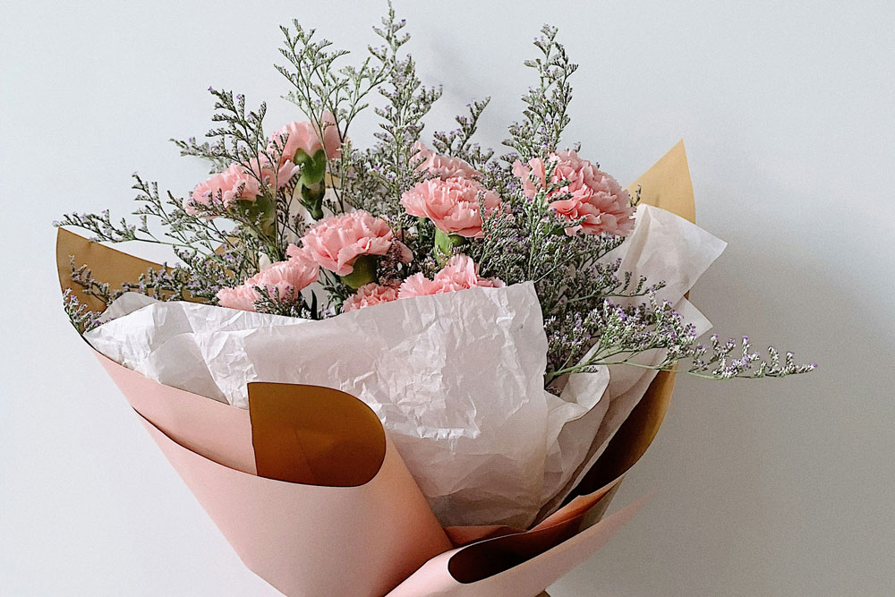
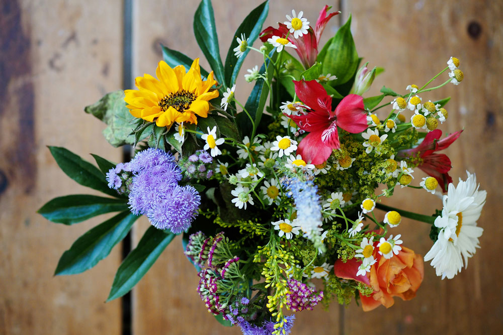

Unsere Sträusse faszinieren nicht nur unsere treue Kundschaft, sondern auch uns selbst immer wieder von Neuem. Wir binden täglich frische Kombinationen aus saisonalen Blumen, passenden Grüntönen und feinen Details, damit jeder Strauss eine eigene Ausstrahlung bekommt. Ob als Geschenk, als Dankeschön oder als schöner Blickfang zu Hause: Wir beraten dich persönlich zu Farben, Stil und Grösse und stellen den Strauss so zusammen, dass er zu deinem Anlass und deinem Budget passt.


Zuständig für Sträusse
Gretha betreut unser Strausssortiment und hilft dir bei der passenden Auswahl.
Über Gretha
Gretha ist Gymnasiastin und hat ein feines Gespür für Farben und Formen. Mit viel Freude kombiniert sie saisonale Blumen zu harmonischen Sträussen, die modern wirken und zugleich persönlich bleiben.
Mit ihrer kreativen Art überrascht sie Kundinnen und Kunden immer wieder mit liebevollen Ideen für Geburtstage, Dankeschöns und kleine Feste. Sie berät ruhig und verständlich, damit jeder Strauss zum Anlass passt und lange Freude macht.